Snow reports · November 2026
Daily snow reports for skiers: where the snow is, what is coming and where to ski, from the SnowScope snow map and measuring stations. Every number comes from that day's data.

Les Grands Montets saw 74 cm of new snow in the last 72 hours, with more forecast for the coming days, according to our model on November 17, 2026.

Austria snow today, 17 November: snow cover, new snow, snow depth by height, the next days and the best resorts.

Bulgaria snow today, 17 November: snow cover, new snow, snow depth by height, the next days and the best resorts.

Finland snow today, 17 November: snow cover, new snow, snow depth by height, the next days and the best resorts.

France snow today, 17 November: snow cover, new snow, snow depth by height, the next days and the best resorts.

Snow at the UK's favourite Alpine resorts on 17 November: snow depth on the upper slopes, fresh snow, the next three days and the pick for a short trip.

Italy snow today, 17 November: snow cover, new snow, snow depth by height, the next days and the best resorts.

Norway snow today, 17 November: snow cover, new snow, snow depth by height, the next days and the best resorts.

Poland snow today, 17 November: snow cover, new snow, snow depth by height, the next days and the best resorts.

Romania snow today, 17 November: snow cover, new snow, snow depth by height, the next days and the best resorts.

Slovakia snow today, 17 November: snow cover, new snow, snow depth by height, the next days and the best resorts.

Sweden snow today, 17 November: snow cover, new snow, snow depth by height, the next days and the best resorts.

Switzerland snow today, 17 November: snow cover, new snow, snow depth by height, the next days and the best resorts.

UK snow today, 17 November: snow cover, new snow, snow depth by height, the next days and the best resorts.

Ukraine snow today, 17 November: snow cover, new snow, snow depth by height, the next days and the best resorts.
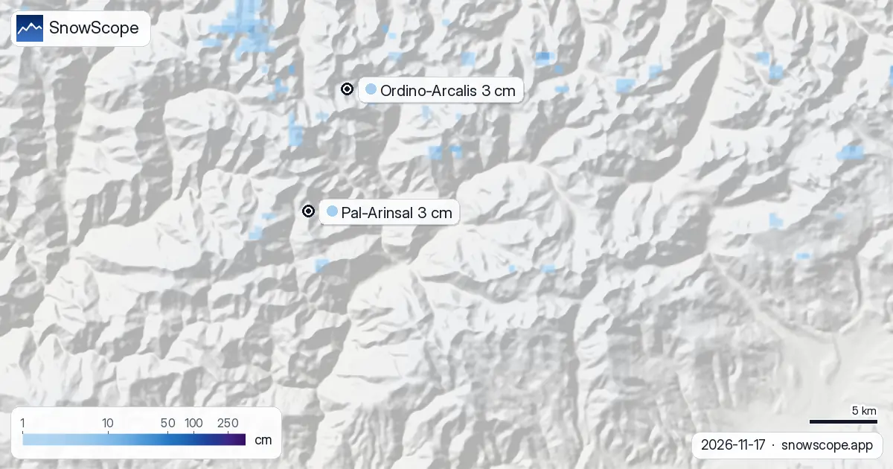
Andorra snow today, 17 November: snow cover, new snow, snow depth by height, the next days and the best resorts.

Czechia snow today, 17 November: snow cover, new snow, snow depth by height, the next days and the best resorts.

Slovenia snow today, 17 November: snow cover, new snow, snow depth by height, the next days and the best resorts.
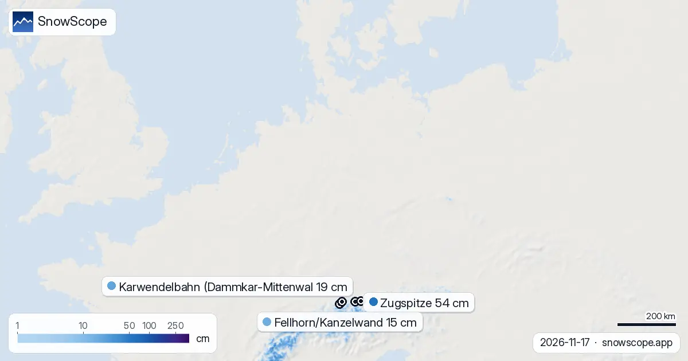
Germany snow today, 17 November: snow cover, new snow, snow depth by height, the next days and the best resorts.

Kosovo snow today, 17 November: snow cover, new snow, snow depth by height, the next days and the best resorts.

The daily ranking: most new snow forecast for the next 24 hours and until 20 November, in Europe, Morocco and North America, snow line included. The …
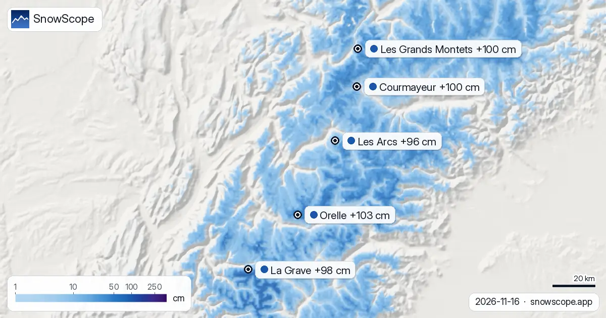
Les Arcs snow forecast: up to 96 cm expected by 19 November (Alps). At Orelle, the freezing level reaches 2,730 m to 3,020 m on 17 November, so the …
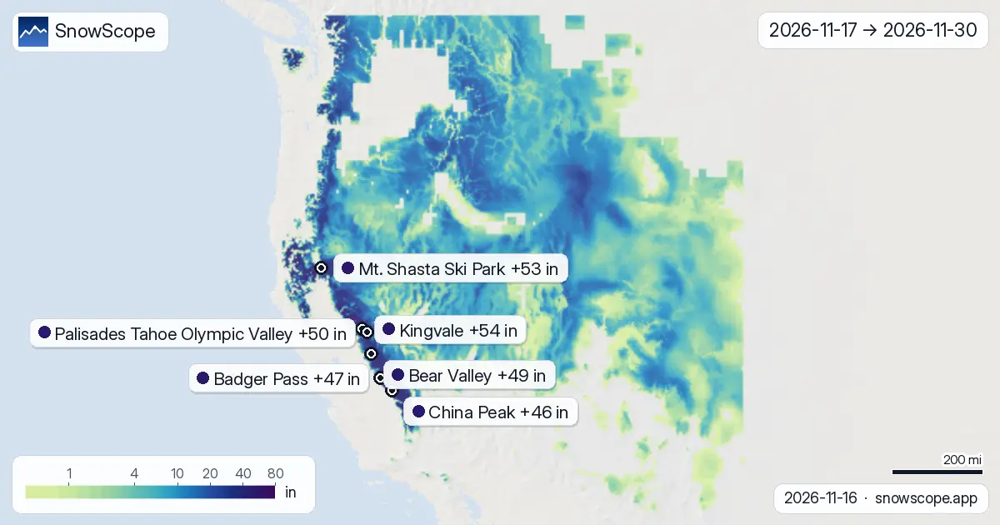
The two-week picture in the US West, 17 November to 30 November, drawn from the two global models that reach two weeks, ECMWF and GFS. Middle of the …

Whistler Blackcomb saw 76 cm of new snow in the last 72 hours, with Mount Cain Alpine Park also receiving 64 cm, as of November 16, 2026.

Albania snow today, 16 November: snow cover, new snow, snow depth by height, the next days and the best resorts.

Andorra snow today, 16 November: snow cover, new snow, snow depth by height, the next days and the best resorts.

Austria snow today, 16 November: snow cover, new snow, snow depth by height, the next days and the best resorts.

Bosnia and Herzegovina snow today, 16 November: snow cover, new snow, snow depth by height, the next days and the best resorts.

Bulgaria snow today, 16 November: snow cover, new snow, snow depth by height, the next days and the best resorts.
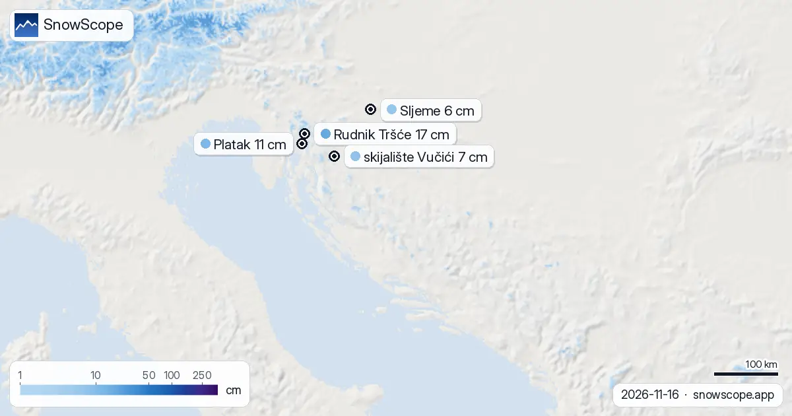
Croatia snow today, 16 November: snow cover, new snow, snow depth by height, the next days and the best resorts.

Czechia snow today, 16 November: snow cover, new snow, snow depth by height, the next days and the best resorts.

Finland snow today, 16 November: snow cover, new snow, snow depth by height, the next days and the best resorts.

France snow today, 16 November: snow cover, new snow, snow depth by height, the next days and the best resorts.

Germany snow today, 16 November: snow cover, new snow, snow depth by height, the next days and the best resorts.

Greece snow today, 16 November: snow cover, new snow, snow depth by height, the next days and the best resorts.
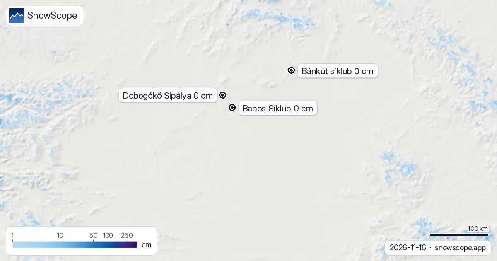
Hungary snow today, 16 November: snow cover, new snow, snow depth by height, the next days and the best resorts.

Ireland snow today, 16 November: snow cover, new snow, snow depth by height, the next days and the best resorts.

Italy snow today, 16 November: snow cover, new snow, snow depth by height, the next days and the best resorts.

Kosovo snow today, 16 November: snow cover, new snow, snow depth by height, the next days and the best resorts.

Montenegro snow today, 16 November: snow cover, new snow, snow depth by height, the next days and the best resorts.

North Macedonia snow today, 16 November: snow cover, new snow, snow depth by height, the next days and the best resorts.

Norway snow today, 16 November: snow cover, new snow, snow depth by height, the next days and the best resorts.

Poland snow today, 16 November: snow cover, new snow, snow depth by height, the next days and the best resorts.

Portugal snow today, 16 November: snow cover, new snow, snow depth by height, the next days and the best resorts.

Romania snow today, 16 November: snow cover, new snow, snow depth by height, the next days and the best resorts.

Snow in Scandinavia on 16 November: Breimsbygda Skisenter about 50 cm on the upper slopes, 332 of 423 resorts with snow, and what is coming next.

Snow in Scandinavia on 16 November: Riksgränsen about 173 cm on the upper slopes, 332 of 423 resorts with snow, and what is coming next.

Serbia snow today, 16 November: snow cover, new snow, snow depth by height, the next days and the best resorts.

Slovakia snow today, 16 November: snow cover, new snow, snow depth by height, the next days and the best resorts.

Slovenia snow today, 16 November: snow cover, new snow, snow depth by height, the next days and the best resorts.

Spain snow today, 16 November: snow cover, new snow, snow depth by height, the next days and the best resorts.

Sweden snow today, 16 November: snow cover, new snow, snow depth by height, the next days and the best resorts.

Switzerland snow today, 16 November: snow cover, new snow, snow depth by height, the next days and the best resorts.

UK snow today, 16 November: snow cover, new snow, snow depth by height, the next days and the best resorts.

Ukraine snow today, 16 November: snow cover, new snow, snow depth by height, the next days and the best resorts.

Sestriere snow forecast for 23–29 November 2026: 30 cm at the top (15–44 cm), 25 cm at the base, snowiest day Wednesday 25 November, with neighbours compared.

Madonna di Campiglio snow forecast for 23–29 November 2026: 27 cm at the top (8–46 cm), 23 cm at the base, snowiest day Wednesday 25 November, with neighbours compared.

Val Gardena snow forecast for 23–29 November 2026: 11 cm at the top (5–18 cm), 6 cm at the base, snowiest day Wednesday 25 November, with neighbours compared.

Next week's fresh snow in Cortina d'Ampezzo: 5–21 cm on the upper slopes and 0–1 cm at the base (23–29 November 2026), best day, best slopes and how sure the forecast is.

Livigno snow forecast for 23–29 November 2026: 19 cm at the top (6–31 cm), 16 cm at the base, snowiest day Wednesday 25 November, with neighbours compared.

Next week's fresh snow in Courmayeur: 8–44 cm on the upper slopes and 5–28 cm at the base (23–29 November 2026), best day, best slopes and how sure the forecast is.

Cervinia snow forecast for 23–29 November 2026: 23 cm at the top (6–41 cm), 19 cm at the base, snowiest day Thursday 26 November, with neighbours compared.

Saalbach snow forecast for 23–29 November 2026: 17 cm at the top (3–31 cm), 8 cm at the base, snowiest day Sunday 29 November, with neighbours compared.

Stubai Glacier snow forecast for 23–29 November 2026: 14 cm at the top (2–25 cm), 12 cm at the base, snowiest day Thursday 26 November, with neighbours compared.

Hintertux snow forecast for 23–29 November 2026: 14 cm at the top (3–24 cm), 12 cm at the base, snowiest day Wednesday 25 November, with neighbours compared.

Mayrhofen snow forecast for 23–29 November 2026: 17 cm at the top (2–31 cm), 1 cm at the base, snowiest day Sunday 29 November, with neighbours compared.

Next week's fresh snow in Kitzbühel: 3–34 cm on the upper slopes and 2–14 cm at the base (23–29 November 2026), best day, best slopes and how sure the forecast is.
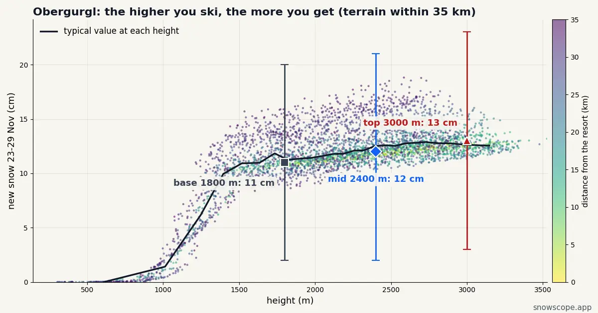
Next week's fresh snow in Obergurgl: 3–23 cm on the upper slopes and 2–20 cm at the base (23–29 November 2026), best day, best slopes and how sure the forecast is.
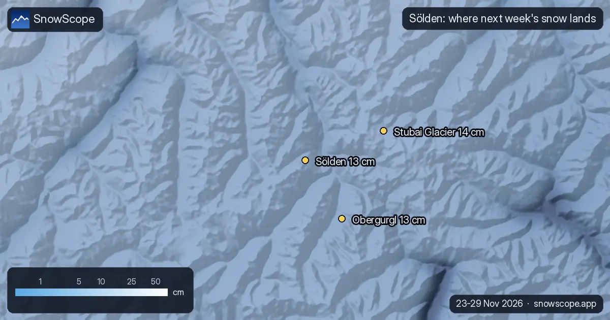
Sölden snow forecast for 23–29 November 2026: 13 cm at the top (2–24 cm), 8 cm at the base, snowiest day Thursday 26 November, with neighbours compared.

Next week's fresh snow in Lech-Zürs: 7–53 cm on the upper slopes and 6–48 cm at the base (23–29 November 2026), best day, best slopes and how sure the forecast is.

Ischgl snow forecast for 23–29 November 2026: 18 cm at the top (3–34 cm), 14 cm at the base, snowiest day Thursday 26 November, with neighbours compared.
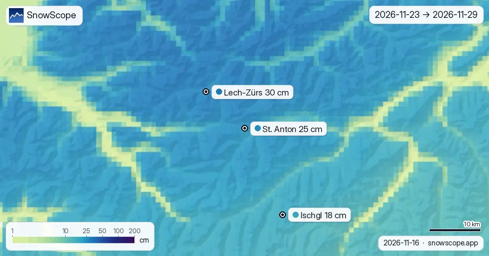
St. Anton snow forecast for 23–29 November 2026: 25 cm at the top (5–45 cm), 18 cm at the base, snowiest day Sunday 29 November, with neighbours compared.
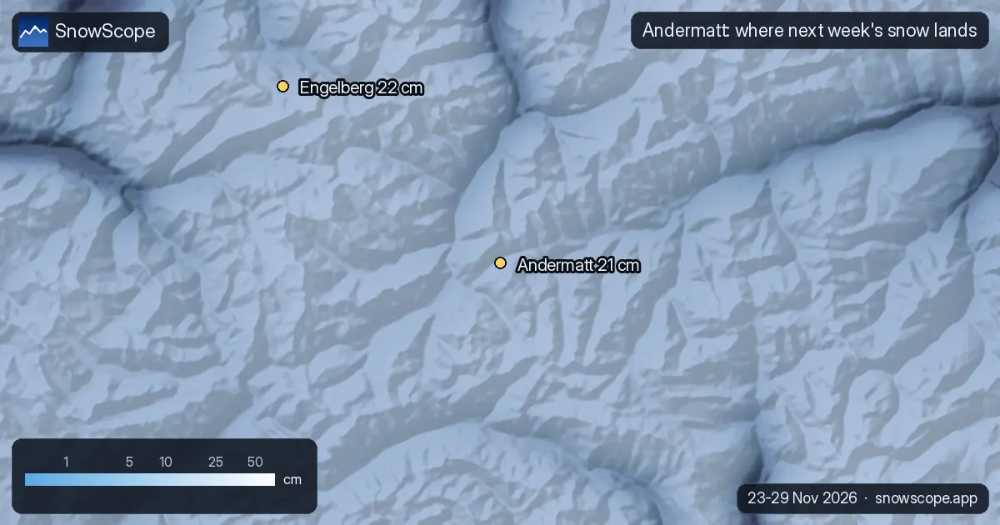
Next week's fresh snow in Andermatt: 3–38 cm on the upper slopes and 3–28 cm at the base (23–29 November 2026), best day, best slopes and how sure the forecast is.

Next week's fresh snow in Saas-Fee: 6–37 cm on the upper slopes and 5–30 cm at the base (23–29 November 2026), best day, best slopes and how sure the forecast is.

Engelberg snow forecast for 23–29 November 2026: 22 cm at the top (2–42 cm), 7 cm at the base, snowiest day Thursday 26 November, with neighbours compared.

Next week's fresh snow in Laax: 4–38 cm on the upper slopes and 1–10 cm at the base (23–29 November 2026), best day, best slopes and how sure the forecast is.

Next week's fresh snow in Davos: 4–27 cm on the upper slopes and 2–8 cm at the base (23–29 November 2026), best day, best slopes and how sure the forecast is.

St. Moritz snow forecast for 23–29 November 2026: 19 cm at the top (5–33 cm), 16 cm at the base, snowiest day Wednesday 25 November, with neighbours compared.

Verbier snow forecast for 23–29 November 2026: 24 cm at the top (5–42 cm), 9 cm at the base, snowiest day Thursday 26 November, with neighbours compared.

Next week's fresh snow in Zermatt: 7–39 cm on the upper slopes and 4–27 cm at the base (23–29 November 2026), best day, best slopes and how sure the forecast is.

Next week's fresh snow in Megève: 9–46 cm on the upper slopes and 1–2 cm at the base (23–29 November 2026), best day, best slopes and how sure the forecast is.

Next week's fresh snow in Flaine: 9–46 cm on the upper slopes and 8–45 cm at the base (23–29 November 2026), best day, best slopes and how sure the forecast is.

Avoriaz snow forecast for 23–29 November 2026: 29 cm at the top (9–48 cm), 17 cm at the base, snowiest day Wednesday 25 November, with neighbours compared.

Next week's fresh snow in Serre Chevalier: 25–68 cm on the upper slopes and 8–28 cm at the base (23–29 November 2026), best day, best slopes and how sure the forecast is.
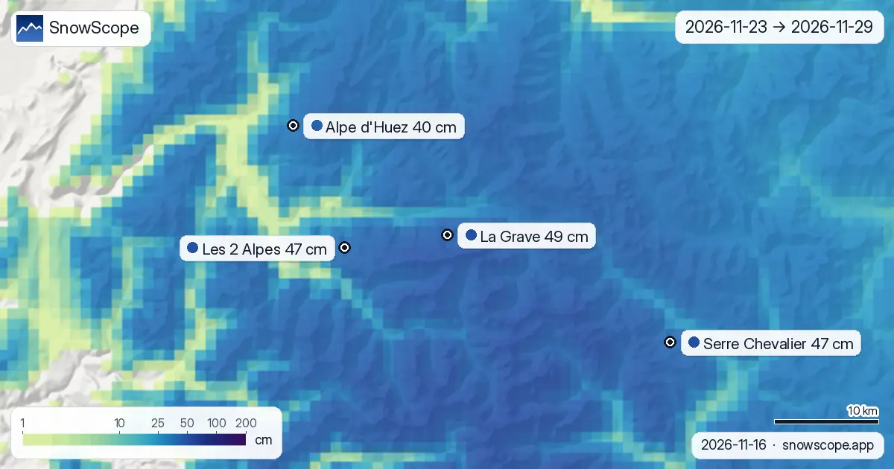
Next week's fresh snow in La Grave: 23–74 cm on the upper slopes and 7–39 cm at the base (23–29 November 2026), best day, best slopes and how sure the forecast is.

Next week's fresh snow in Les 2 Alpes: 20–73 cm on the upper slopes and 4–22 cm at the base (23–29 November 2026), best day, best slopes and how sure the forecast is.

Alpe d'Huez snow forecast for 23–29 November 2026: 40 cm at the top (18–62 cm), 10 cm at the base, snowiest day Wednesday 25 November, with neighbours compared.

La Plagne snow forecast for 23–29 November 2026: 28 cm at the top (11–45 cm), 17 cm at the base, snowiest day Thursday 26 November, with neighbours compared.
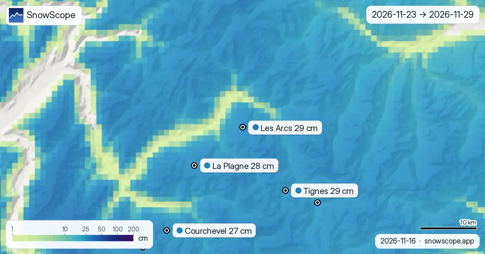
Les Arcs snow forecast for 23–29 November 2026: 29 cm at the top (11–48 cm), 12 cm at the base, snowiest day Thursday 26 November, with neighbours compared.

Méribel snow forecast for 23–29 November 2026: 28 cm at the top (13–44 cm), 19 cm at the base, snowiest day Wednesday 25 November, with neighbours compared.

Next week's fresh snow in Courchevel: 12–42 cm on the upper slopes and 4–30 cm at the base (23–29 November 2026), best day, best slopes and how sure the forecast is.

Next week's fresh snow in Val Thorens: 13–46 cm on the upper slopes and 11–39 cm at the base (23–29 November 2026), best day, best slopes and how sure the forecast is.
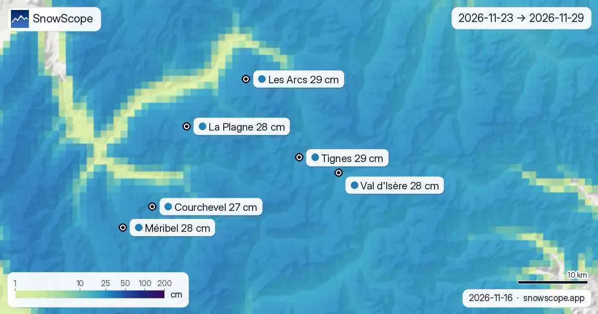
Next week's fresh snow in Tignes: 11–48 cm on the upper slopes and 8–38 cm at the base (23–29 November 2026), best day, best slopes and how sure the forecast is.

Val d'Isère snow forecast for 23–29 November 2026: 28 cm at the top (10–46 cm), 24 cm at the base, snowiest day Thursday 26 November, with neighbours compared.

Chamonix snow forecast for 23–29 November 2026: 27 cm at the top (8–46 cm), 14 cm at the base, snowiest day Wednesday 25 November, with neighbours compared.

How much snow will the mountains gain? Our table shows the resorts with the most new snow forecast for the next 24 hours and until 19 November, in …

Is there more snow than a year ago? We compared today with 15 November last winter at 4 resorts in Western Canada: 2 of them have more snow now, …

The early-winter snowpack in the Alps is building unevenly, and height makes all the difference. Today the deepest snow in the Alps is at La Grave …

Is there snow in the Atlas today? There is no snow on the Atlas ski slopes today. Snow is stored only on the highest summits: about 20 km² of ground, …
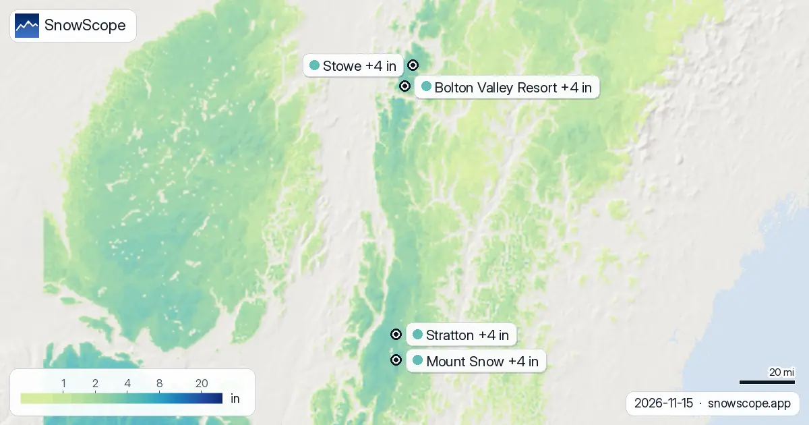
The snow has pulled back since 13 November, from 6,880 sq mi (17,820 km²) to 6,039 sq mi (15,640 km²) today; for 18 November our forecast gives …

2 of 4: that is how many resorts in the US Northeast are clearly above normal today. How does this winter look so far? We set today's snow at 4 …

Snow-covered area: 258,160 km² on 13 November, 253,880 km² today, 298,900 km² forecast for 18 November. The map is getting less white. Three inputs, …

Pyrenees snow report, 15 November. Mixed rain and snow: snow is expected only up high, about 7–19 cm near the top of Cauterets Cirque du Lys …

Big White snow depth: a 99 cm cover on the upper slopes (15 November). The early-winter snowpack in Western Canada is building unevenly, and height …

Les Grands Montets: how much snow is coming? 73–79 cm by 18 November. How much snow is coming in the Alps, and where? Mixed rain and snow: snow is …

At Andermatt (2963 m) the forecast gives 75 mm of precipitation from 15 November to 20 November. During the wet hours the 0 °C level stands near 2160

Read the snow in the Pyrenees today and you get fresh powder, thin early-season snow and warm air that can leave a crust. So here is the kit list, …

Picking a resort in the US Northeast comes down to three things: how deep the snow is, how fresh it is, and what is still to come. We weighed the …

Les Deux Alpes: how much fresh snow fell? 38 cm in 72 hours (15 November). Where did the most fresh snow fall in the Alps? La Grave got 41 cm of new …

Manning Park Resort: 11 cm of fresh snow in 72 hours (Western Canada, 15 November). Whistler Blackcomb got 82 cm of new snow in the last 72 hours, …
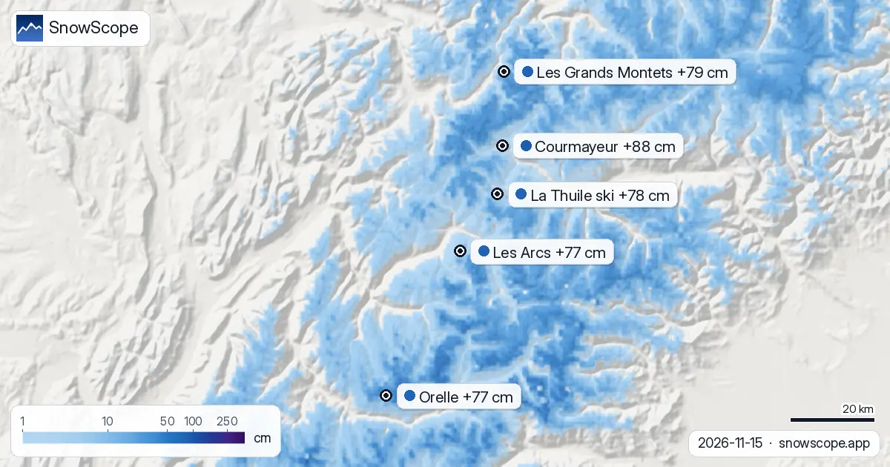
Our forecast for November 15, 2026, shows Courmayeur in Italy leading Europe with 88 cm of new snow expected by Wednesday.

Beaver Mountain charges one $75 adult day price for 2026-27. Our snow history says early December is a coin flip there; the week before Christmas is far safer.

Bridger Bowl's 2026/27 adult ticket is $86 online, $99 at the window. Our history says mid-December is a coin flip at mid-mountain; late December is safer.

Himos snow in mid-November 2026: the weather stations around Jämsä measured 0 to 2 cm on 13 November; the first-snow cross-country loop opens on 14 November, the slope opening date is not set yet. Rain risk this week and 46 past winters.

Indy Base Pass $419, Indy+ $469, two days at each member area. We set it against checked December day prices at seven Indy areas, and their snow odds.

Lofsdalen snow report for mid-November 2026: the Häggberget station at 682 m measured 6 cm on 12 November, valley stations 7 to 8 cm on 13 November; about 7 cm more forecast with no rain, opening 11 December, 46 past winters.
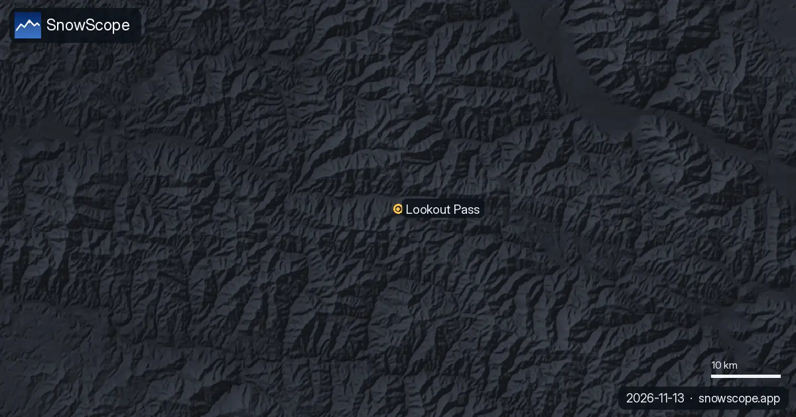
Lookout Pass adult tickets for 2026-2027 are $63 midweek with a reservation, $75 on weekends. Mid-mountain had 20 in (50 cm) by 15 December in 85 % of past winters.

Montana Snowbowl's 2026/27 adult tickets are $78 on weekdays and $85 on weekends. Mid-mountain had 20 in (50 cm) by 15 December in 83 % of our past winters.

Narvikfjellet snow conditions in mid-November 2026: Norway's national snow map shows about 50 cm at 1110 m and 35 cm at 844 m but almost none by the fjord; the nearest Swedish station at Katterjåkk measured 9 cm. Week ahead and 46 past winters.

Røros dog sledding guide for winter 2026-27: about 5 to 6 cm of snow on Norway's national snow map, kennels listed by Destination Røros with prices, the Femundløpet sled-dog race in February 2027, and the rules for your own dog near tame reindeer.

Ski Cooper holds its adult weekday price at $49 for 2026-27 ($99 weekends). Mid-mountain usually has 26 in (66 cm) of snow on 15 December, 70 % of winters above 20 in.

Sunlight tickets start at $74 and its Sunny 6 Pack is $349 if bought by November 30, 2026. Mid-mountain had 20 in (50 cm) by 15 December in 72 % of winters.

Timberline full-day tickets are $129 off-peak and $161 peak; the afternoon ticket is $96 off-peak. Mid-mountain usually holds 52 in (132 cm) by 15 December.

From Ski Cooper ($49 weekdays, $99 weekends) to Mt. Baker ($98.80 vs $115.42): checked December price splits at seven US West ski areas, with their snow odds.

Romme Alpin snow in mid-November 2026: Borlänge measured 4 cm, Ludvika 10 cm and Falun 0 cm on 13 November; rain this week; the season starts 19 December on made snow. What 46 past winters say about natural snow here.

Schweitzer's 2026/2027 3-Pack is $249, $83 a day by the resort's own count. The top usually holds 54 in (138 cm) of snow by 15 December.
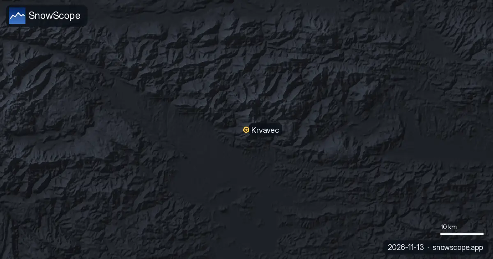
Krvavec December skiing: day pass EUR 47, 6 days EUR 205, yet only 13 cm at mid-mountain on a typical 15 December and 11 of 46 winters bare that day.

Ski 157 km of mapped runs in Serre Chevalier where the top of the mountain has a 100 % chance of snow by mid-December.
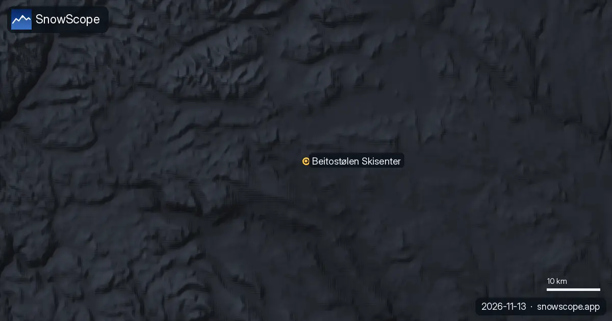
Beitostølen snow conditions in mid-November 2026: about 10 to 13 cm across the whole area on Norway's national snow map, 10 cm more forecast this week with no rain, and how 46 past winters usually look at this high village.

Vuokatti snow conditions in mid-November 2026: the stations at Sotkamo measured 0 cm on 13 November, Kajaani 1 cm; about 9 cm is forecast this week but some of it as rain; slopes aim to open 4 December. 46 past winters.

Turracher Höhe in December: 23 cm mid-mountain on a typical 15 December, 39 % of winters with 30 cm before Christmas; 6-day low-season pass EUR 353.

Branäs snow conditions in mid-November 2026: the Kindsjön station at 425 m measured 27 cm on 13 November, Letafors 17 cm, Östmark in the valley 0 cm. Rain risk this week, opening 11 December, 46 past winters.

Hochkar December skiing: day tickets seen from EUR 32.90 to 47.90 on December dates; 38 cm mid-mountain on a typical 15 December, falling since the 1980s.

Idre Fjäll December skiing: 32 cm mid-mountain on a typical 15 December; 65 % of winters with 30 cm in mid-December, 76 % in Christmas week. Honest odds.
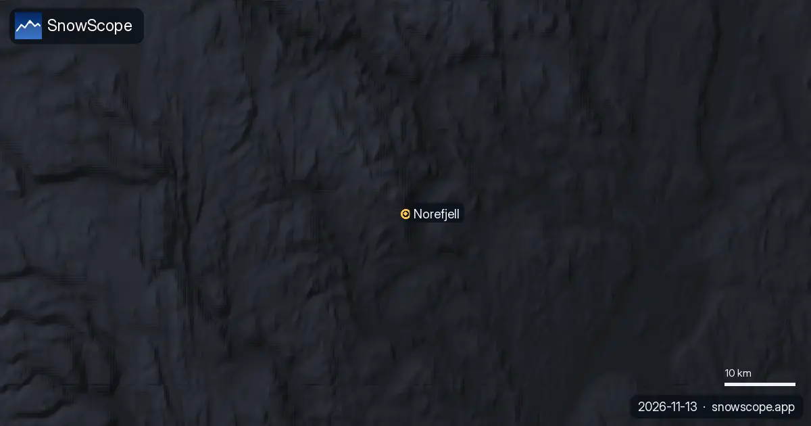
Norefjell snow depth in mid-November 2026: Norway's national snow map jumped from about 4-5 cm to 15-20 cm overnight, with about 45 cm on the high plateau. The week ahead, rain risk low down, and 46 past winters.

Tahko snow depth in mid-November 2026: the slope season opened on 13 November with 2 of 14 lifts, on made snow; the stations around measured 0 cm after a short 2 to 4 cm cover melted. The week ahead and 46 past winters.

Brighton from $72 vs Ski Cooper at $49 weekdays and Wolf Creek at $96: Utah and Colorado budget areas compared on 46 winters of December snow.

Ten European ski resorts ranked for December value, led by Les 2 Alpes with 75 cm of mid-mountain snow.
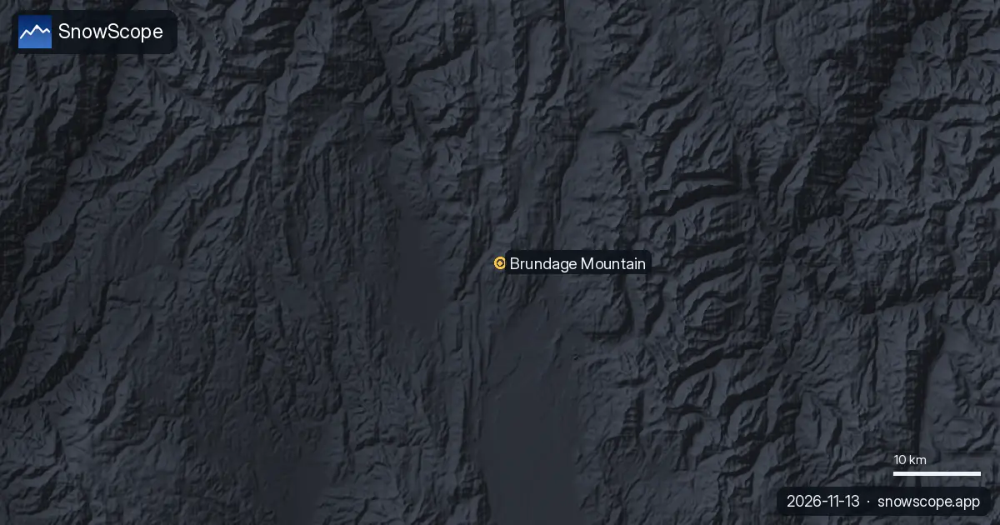
Brundage day tickets start as low as $65 on select days; mid-mountain had 20 in (50 cm) of snow on 15 December in 87 % of our past winters. Holiday dates to avoid.

Boí Taüll starts at 2039 m and beats Baqueira Beret on day-pass price, though early December snow still takes some patience.

Funäsdalsfjällen snow in mid-November 2026: the station at Ljusnedal measured 7 cm on 13 November, Tänndalen is open on a small area, Ramundberget opens 19 December. Week ahead and 46 past winters at both resorts.

Sälen December skiing: 28 cm on a typical 15 December and 48 % of winters with 30 cm in mid-December, down from the 1980s; Trysil next door does better.

Rovaniemi husky and dog guide for winter 2026-27: the weather stations measured 7 to 8 cm on 13 November, the city's first ski track opened, three husky farms listed by Visit Rovaniemi with dates and prices, daylight, and the rules for your own dog.

Snow King adult day tickets start at $100. On our snow history its mid-mountain had 20 in (50 cm) by 15 December in 87 % of winters: a cheap way to ski the Jackson valley.

Orcières Merlette offers a high base at 1826 m and a 6-day pass from 227 EUR, making it a reliable choice for a December ski trip.

Is Alpe d'Huez worth it for December 2026? We check the snow odds, the starting price of 58.00 EUR, and compare it with Les 2 Alpes.

Myrkdalen snow depth in mid-November 2026: Norway's national snow map shows about 14 cm on the slopes and 33 cm at 1333 m; our forecast gives about 44 cm at the top in seven days. 46 past winters for late November.

Slovenia's ski passes are the cheapest (Krvavec EUR 205 for 6 days), but natural December snow there is rare; Lachtal, the Hochkar and the Mölltal glacier do better.

Loveland sells $60 online tickets through December 13, 2026, then $159 at the window. Is early-December snow good enough? Our 46 past winters answer week by week.

Cauterets offers 25 km of runs for 46 EUR, but our snow history shows that the best chance for cover is the last week of December.

Kiruna dog sledding guide for winter 2026-27: the weather station in Kiruna measured 0 cm of snow on 13 November, operators listed by Kiruna Lapland with season and prices, short days, and the rules for your own dog on ski tracks, in reindeer land and in Abisko National Park.

Lachtal December skiing: day pass EUR 62, children up to 6 free, 46 cm mid-mountain on a typical 15 December, but a clear downward trend.

Saariselkä snow report for mid-November 2026: the weather station in Saariselkä measured 4 cm on 13 November, steady for a week; about 22 cm is forecast in seven days with no rain; slopes aim to open 21 November.

White Pass online tickets start at $69 off-peak and $89 on peak days, and mid-mountain had 20 in (50 cm) of snow on 15 December in 87 % of past winters.

Ski the 131 km of runs in the Forêt Blanche this December with a six-day pass for 298 EUR.

Riksgränsen and Björkliden snow report for mid-November 2026: the station at Katterjåkk measured 9 cm and Abisko 2 cm on 13 November, the week ahead, why the lifts open only in February, and 46 past winters.

Ruka December skiing: 6-day pass EUR 265, day EUR 58; 36 cm on a typical 15 December, but only 39 % of winters with 30 cm in the first week.

Monterosa Ski day passes run from 40.00 to 71.00 EUR online. In December the snow is up high: 124 cm usual at 3030 m, 6 cm at 1207 m.

Hafjell snow report for mid-November 2026: about 2 cm near the top and nothing at the bottom on Norway's national snow map, 9 cm forecast at the top this week with rain below, and how 46 past winters usually look in late November.

Wolf Creek adult tickets are $96 on regular days and $110 on peak days for 2026-2027; mid-mountain had 34 in (87 cm) of snow on a typical 15 December.

Fellhorn/Kanzelwand December skiing: 63 cm at the 1965 m top on a typical 15 December, 10 cm at the bottom; Advent 6-day pass EUR 344.50 until 20 December.
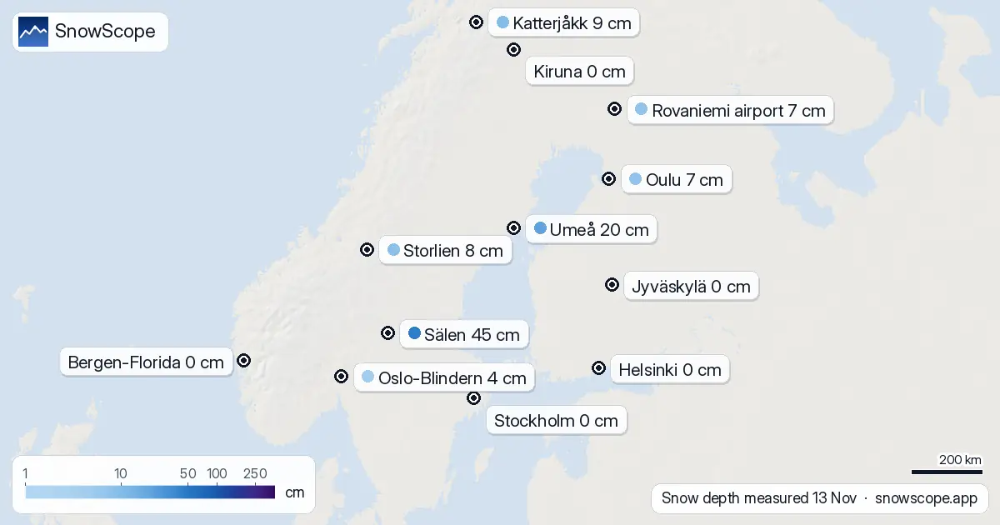
On 13 November 2026 the weather stations in Stockholm and Helsinki measured 0 cm of snow while Sälen had 45 cm and Umeå 20 cm. Height, the sea, the city and the track of the storms explain it, with numbers from 46 past winters.

Plan your December 2026 trip to Les Orres by matching weekly pass prices with our snow history of 46 past winters.

Hemavan December skiing: 82 cm mid-mountain on a typical 15 December, every winter with 30 cm there in mid-December; the deepest December of our Nordic set.

Pyhä-Luosto snow depth in mid-November 2026: weather stations around the fells measured 0 to 9 cm on 13 November, below normal; about 23 cm is forecast this week with no rain. Opening plans and 46 past winters.

Brighton day tickets start at $72 for 2026/27 if bought early. Mid-mountain usually has 37 in (94 cm) of snow on 15 December, against 25 in (64 cm) at Park City.

Compare Grandvalira and Spanish resorts in December 2026 for snow depths, lift heights, and prices starting from 49.00 EUR.

Vemdalen snow conditions in mid-November 2026: Swedish weather stations around Vemdalsskalet and Björnrike measured 6 to 12 cm on 13 November after a snowy two days, about 8 cm more this week, opening plans and 46 past winters.

Pitztal Glacier December skiing: 87 cm mid-mountain on a typical 15 December, December snow up since the 1980s; day pass EUR 77, 6 days EUR 410.

Voss snow forecast for mid-November 2026: Norway's national snow map shows about 20 cm at 1348 m and almost nothing in town, our forecast gives about 35 cm on top of Voss Resort over seven days with rain below about 600 m, plus 46 past winters.

16 budget-friendly US ski areas ranked by December snow odds from 46 past winters, with the day prices we checked: from $49 weekdays to $125 and up.

For a low-cost December family ski week at Astún-Candanchú, aim for late December when top slopes hold good snow in 67 % of past winters.

Germany in December: the Zugspitze and the Fellhorn top had 30 cm in at least 9 of 10 winters in mid-December; Sudelfeld, Brauneck and the Feldberg rarely do.

A practical guide to dog sledding around Tromsø in winter 2026-27: which husky farms the tourist board lists, when the snow season starts, what a ride costs, the polar night, and the rules for walking your own dog on snow and near reindeer.

Puy-Saint-Vincent pairs a 44 EUR adult 1-day pass with solid December snow higher up, compared here with its big neighbour Serre Chevalier.

Kläppen snow depth in mid-November 2026: the weather station in Sälen, 13 km away, measured 45 cm on 13 November after 11 cm the day before; the resort reports 25 cm. Rain risk this week, opening 11 December, 46 past winters.

Every one of our 46 past winters had 20 in (50 cm) or more at Grand Targhee's mid-mountain on 15 December. Online day tickets run $125 to $180 by date.

Oppdal December skiing: 60 cm at the 585 m base on a typical 15 December, 93 % of winters with 30 cm there in mid-December, better than Trysil's base.

Grimentz-Zinal offers 71 km of runs and reliable high-altitude snow for your December trip, with 6-day passes at CHF 339.00.

Austria before Christmas: Galtür EUR 258 and Kühtai EUR 269 for 6 days with 30 cm in over 90 % of winters; glaciers cost more, small hills are a gamble.

Planning a December trip to Baqueira Beret? See our snow history, ticket prices starting at 70,00 € for a 1-day pass, and how it compares to Astún-Candanchú.

Bergen dog owners, weekend of 14 November 2026: bare ground at Florida on Friday, 5 cm only up at Kvamskogen, and a very wet Sunday. Bergen's year-round leash rules, the four fenced dog yards, and the Fløyen trails.


We rank French ski resorts by December snow odds and checked pass prices, starting from 36.00 EUR for an adult day pass in Les Karellis.

At Oukaïmeden, December gives 18 cm at mid-mountain in a typical month, against 44 cm in February and 53 cm in March. What 46 winters say about the right month to ski.


Galtür December skiing: 55 cm mid-mountain on a typical 15 December, 93 % of winters with 30 cm in mid-December; low-season day pass EUR 55.50 until 18 December.

Geilo December skiing: 57 cm mid-mountain on a typical 15 December, 96 % of winters with 30 cm in mid-December; day passes from NOK 590 (about EUR 56).

Göteborg dog owners, weekend of 14 November 2026: 0 cm of snow measured around the city on Friday, a mild, mostly dry weekend. Where the leash rules are relaxed in November, the 12 fenced dog yards and Delsjöområdet.


Grandvalira is often sold as cheap December skiing, yet natural snow at the base averages just 9 cm in past winters.

Helsinki for dog owners this weekend: 0 cm of snow measured at all five city stations on Friday. The Östersundom dog forest, nearly a hundred dog parks, the rules on ski tracks, and a grey, mild weekend.

Hemsedal December skiing: 70 cm mid-mountain and 106 cm at the top on a typical 15 December, but 32 cm at the base; Geilo nearby from NOK 590 a day.

Hintertux Glacier December skiing: 98 cm at 3245 m and 52 cm mid-mountain on a typical 15 December; day pass EUR 82, 6 days EUR 399, small children free.

Compare December snow odds and checked lift pass prices starting at 40.00 EUR across Italian ski areas for your weekend drive.

Kühtai December skiing: 60 cm at the 1939 m base on a typical 15 December, and a low-season 6-day pass of EUR 269 until 18 December.

Les 2 Alpes reaches 3511 m for high snow in December 2026, with an adult 6-day pass priced at 266.50 EUR.

Les Karellis offers 45 km of runs and a 6-day adult pass for 191.00 EUR with a 98 % chance of snow mid-mountain in late December.

Levi December skiing: 38 cm on a typical 15 December, 91 % of winters with 30 cm in Christmas week, and December snow up, not down; day pass EUR 60, EUR 57 online.

Ski Livigno for 51.50 EUR per day before December 18 when the snow at the top reaches 30cm in 100 % of past winters.


Montgenèvre has 56 cm of usual December snow at its base, giving weekend drivers deeper early cover than Sestriere across the border.

Obertauern December skiing: 43 cm on a typical 15 December at mid-mountain, and a 6-day pass of EUR 331 before Christmas. Snow history and prices.


Oukaïmeden in mid-December: 16 cm at mid-mountain in a typical winter, 50 cm or more in only 11 % of winters. Date by date, what 46 winters say.

Oukaïmeden is 50 km as the crow flies from Marrakech. How to pull off a December ski weekend: when to go, what the snow odds are, what we know about prices.

Les 3 Vallées: €75.70 a day from 5 to 18 December 2026. Oukaïmeden: no official online tariff, 16 cm at mid-mountain in mid-December. The honest comparison.


Saas-Fee lifts reach 3556 m where our snow history shows 100 % of past winters have at least 30 cm of snow by mid-December.

12 Nordic resorts in December: Hemavan, Hemsedal and Geilo had 30 cm at mid-mountain in mid-December in 96-100 % of winters; Finnish day passes EUR 58-60.

December snow odds from 46 winters and checked day prices: Ski Cooper $49, Les 3 Vallées €75.70, Oukaïmeden no official tariff. Where a cheap December ski day works.

Discover the calm slopes of St-Luc Chandolin where mid-mountain snow has reached 30 cm in 98 % of winters during late December.


Tampere on 13 November 2026: 0 cm at Tottijärvi and at the stations around the city, 2 cm at Hyytiälä to the north-east. In half of past winters Tampere was white by 10 November. A trace of wet snow on Saturday.

Measured snow in Tromsø on 13 November 2026: 6 cm at the town station on the island, 44 cm at 710 m in Lyngen, 3 cm at Bardufoss. Near normal for the date, and a very cold weekend ahead.


Trysil December skiing: 44 cm mid-mountain on a typical 15 December, 83 % of winters with 30 cm in mid-December; prices are dynamic, so book early.

Valloire-Valmeinier offers 131 km of runs and a 98 % chance of 30 cm of snow at mid-mountain by mid-December.


Zugspitze December skiing: 122 cm at 2627 m on a typical 15 December, adult day ticket EUR 70.50 online; Garmisch-Classic below it EUR 69 with far less snow.

Ylläs snow conditions in mid-November 2026: the weather stations around Ylläs measured 0 to 2 cm on 13 November, far below normal; about 23 cm of snow is forecast this week with no rain, and the slopes aim to open on 21 November.

Mölltaler Gletscher December skiing: 66 cm at the 2103 m bottom lift and 128 cm mid-mountain on a typical 15 December; low-season 6-day pass EUR 332.

Kvitfjell snow conditions in mid-November 2026: about 5 cm on the upper slopes and 3 cm at the bottom on Norway's national snow map, roughly 10 cm forecast up high this week, and what 46 past winters say about late November and December.

Mt. Baker in December: 46 in (116 cm) of snow at mid-mountain on a typical 15 December, and a $98.80 Monday-to-Thursday ticket sold on the day only.

Can a cautious first-timer trust Courmayeur in December when mid-mountain averages 60 cm of snow across our past winters?

The white area on the map went from 910 km² (12 November) to 1,100 km² today, and the forecast says 640 km² on 17 November. Mixed rain and snow: snow …

Alps snow report, 14 November. If you want the most snow in the Alps today, look at Saint-Luc (Switzerland): about 110 cm up high. After it come …

Åre December skiing: 40 cm mid-mountain on a typical 15 December, 89 % of winters with 30 cm in mid-December, but a sharp fall at the top since the 1980s.

Read the snow in the Pyrenees today and you get fresh powder, thin early-season snow and warm air that can leave a crust. So here is the kit list, …
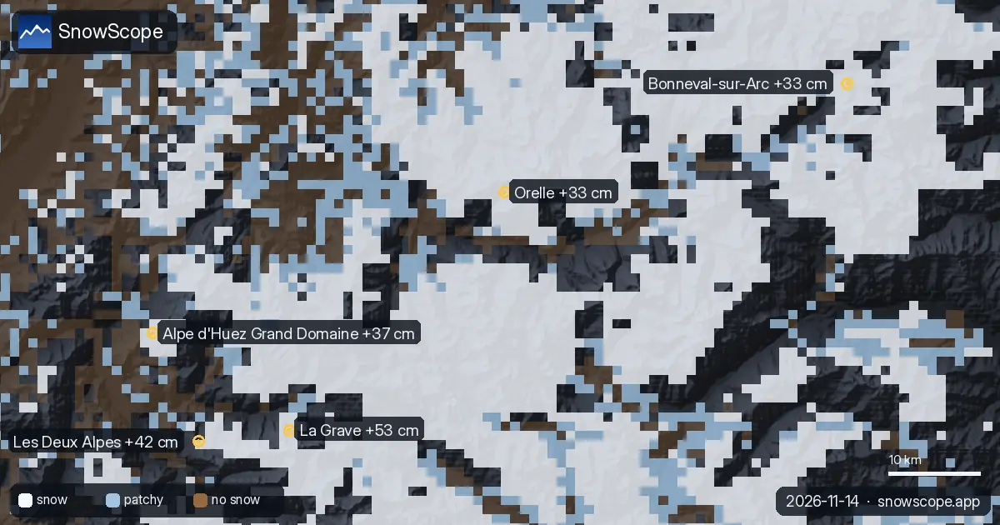
Les Deux Alpes: 38–42 cm of fresh snow in 72 hours (Alps, 14 November). La Grave got 53 cm of new snow in the last 72 hours, 7 cm of it in the last …

Where should you be in the next days? Here are the resorts with the most new snow forecast for the next 24 hours and until 17 November, in Europe, …

The white area on the map dropped from 49,467 sq mi (128,120 km²) (11 November) to 49,050 sq mi (127,040 km²) today, and the forecast says …

Measured snow around Östersund on 13 November 2026: 19 cm at Norderön, 24 cm at Marby, 33 cm at Rissna. Three to four times the usual depth for the date, with a cold, dry weekend ahead.

Himalaya snow cover in November 2026 from NASA MODIS: snow on 610,409 km² of ground above 2,000 m between the Hindu Kush and Bhutan, half the clear ground white from about 4,800 m in Nepal and 3,600 m in the Karakoram. The NDSI explained, plus shadows, cloud and the low autumn sun.

Measured snow depth in Norway on 13 November 2026: 37 cm at Tryvannshøgda above Oslo, 44 cm at Lyngen in Troms, 10 to 18 cm in the inland valleys, bare ground in Bergen, Trondheim and inland Finnmark.

Alps snow cover by satellite, 4 to 13 November 2026, checked on the ground. NASA MODIS mapped snow down to about 1,200 m, but 555 snow stations show the ground mostly white only from about 1,750 to 2,000 m. Above 1,500 m MODIS saw 41,400 km² of snow. How the NDSI works and where it went wrong this week.

Helsinki snow depth on 13 November 2026: 0 cm at Kaisaniemi, Kumpula, Tapiola, Helsinki-Vantaa and Nuuksio. The usual first-snow date, and a weekend forecast that keeps the city grey.
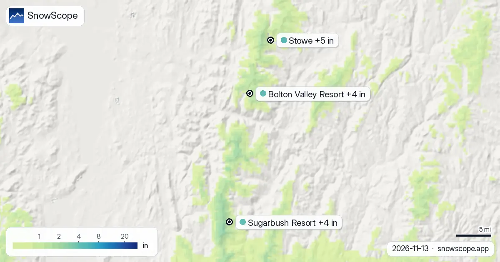
Between now and 16 November we expect 5 in (12 cm) at Stowe, 4 in (11 cm) at Bolton Valley Resort and 4 in (10 cm) at Sugarbush Resort. Remember that …

Umeå measured 20 cm of snow on 13 November 2026, up from bare ground on Wednesday. How the stations around the city compare, why this is early, and whether it survives Monday's rain.

Kiruna snow depth on 13 November 2026: 0 cm at the town station, at Jukkasjärvi and at Esrange. In our 46-winter snow history the town always had snow on this date. What the weekend brings.

201,390 km²: that is the snow-covered ground our model counts in Western Canada today. Last clear view of every place, up to 13 November: that is …

Measured snow depth across Sweden on 13 November 2026: 133 of 322 stations white, a belt from Dalarna to Västerbotten with up to 45 cm, a bare south and an almost bare far north around Kiruna.

Stockholm snow depth on 13 November 2026: 0 cm at Observatoriekullen and at every station around the city. When the snow usually arrives, and why this weekend will not bring it.

Deer Valley ski conditions on 13 November 2026: no real snow on the ground yet, about 4 in near the top from the weekend storm, rain on the low East Village side below about 6,700 to 7,600 ft, and 11 in up top over the week.

Measured snow depth in Oslo on 13 November 2026: 4 cm at Blindern, 31 cm at Bjørnholt and 37 cm at Tryvannshøgda. What a normal mid-November looks like, and what the weekend does to it.

Is this a good start to the winter in the US Northeast? Today's snow at 4 resorts in the US Northeast, set against the same date in each of the past …

Measured snow on the ground on 13 November 2026 in Oslo, Bergen, Trondheim, Tromsø, Stockholm, Göteborg, Östersund, Umeå, Luleå, Kiruna, Helsinki, Tampere, Oulu and Rovaniemi: from 20 cm in Umeå to bare ground in Kiruna.

The snow is not done yet: we expect 13 in (34 cm) at Bear Valley, 13 in (34 cm) at Dodge Ridge and 13 in (33 cm) at Badger Pass by 16 November. A …

Park City, Utah snowfall forecast for 13 November 2026: almost no snow on the ground right now, about 5 in near the summit from the weekend storm with a snow level of 7,400 to 7,700 ft, rain at the base, and about 12 in up top over the week.

Stratton by height, from our model: top 4 in (10 cm) (3,881 ft / 1,183 m), middle 2 in (6 cm) (2,936 ft / 895 m), base 1 in (2 cm) (1,991 ft / …

A single snowy week can flatter a season, so we weigh today's snow against many past winters in Western Canada. Is the snow store filling as usual? …

Alpental snow forecast for 13 November 2026: about 1 in on the upper mountain, rain almost to the summit this weekend with a snow level near 5,400 to 5,600 ft, then 4 to 5 in of mixed rain and snow up top next week.

Bogus Basin snow check for Boise skiers on 13 November 2026: no snow on the ground yet, rain and mixed snow this weekend with a snow level near 6,300 to 6,800 ft, then colder air and about 8 in at the summit by next week.

39 in (99 cm) on the upper slopes: that is why Telluride heads our list. Depth today, new snow in the last 72 hours, the forecast: put together, they …

The Sillian (Hochpustertal) ski map with our snow layer on 13 November 2026: 8.6 cm on the top at 2399 m, bare lower slopes, and a week of mixed rain and snow with the snow line near 1,800 to 2,000 m.

Revelstoke snow forecast: up to 10–21 cm expected by 16 November (Western Canada). At Whistler Blackcomb, the freezing level reaches 1,500 m to …

Silvretta Montafon snow conditions on 13 November 2026: 4.5 cm on the top at 2421 m, bare mid-mountain and valley, about 40 cm on the way up high this week while the valley gets rain below 1,500 m.

Lech Zürs snow report for 13 November 2026: about 6 cm at the top (2436 m) and at mid-mountain, bare in Lech at 1430 m. This week 42 cm up high on our forecast, up to 91 cm on others, rain and snow mixed around 1400 m. And why Lech is the snowy side of the Arlberg.

Model plus forecast in the Alps today gives fresh powder. What to wear, what to pack and when to ski, resort by resort. Packing advice comes with …

Snow depth in St Anton am Arlberg on 13 November 2026: about 1 cm at the top (2642 m), 5 cm at mid-mountain, bare in the village. This week 42 cm at the top and 33 cm mid-mountain, rain below about 1480 m. How deep is deep enough for the steep runs.

Dévoluy snow outlook: in line for 24–32 cm by 16 November (Alps). The next few days look decidedly unsettled in the Alps, with the heaviest snow …

The snow-covered area has grown from 39,090 km² on 11 November to 76,100 km² today, and our forecast gives 57,910 km² on 16 November: more ground is …

Snow in the Atlas is fleeting at this time of year, so every day's picture matters. The Atlas ski resorts hold no snow on their slopes today. Snow is …

Obergurgl snow report for 13 November 2026: about 20 cm at the top (3024 m), 5 cm at mid-mountain, bare at the lowest lifts (1784 m). Snow forecast for the week: 34 cm up high, 21 cm low down, snow line near 1700 m. Plus the usual early season.

Snow depth in Sölden on 13 November 2026: about 9 cm at the top (3245 m), 5 cm at mid-mountain, none in the valley at 1346 m. 25 cm forecast up high this week, rain below about 1620 m. Glacier vs village, with 46 past winters.

Snowfall in Val Thorens, 13 November 2026: 27 cm fell at the top (3175 m) and 17 cm at 2498 m over seven days; snow depth is 50 cm and 8 cm. Next seven days: 86 cm at the top, 73 cm at 2498 m, snow line well below the village. Usual snowfall season from 46 winters.

Snow depth in Chamonix on 13 November 2026, height by height: nothing on the valley floor, 1 cm at 2001 m, 12 cm at the top of Brévent-Flégère (2486 m), 5 to 24 cm at the top of the Grands Montets (2768 m). About a metre forecast up high this week, rain in the valley. How deep Chamonix usually gets, from 46 winters.

Our picks are La Grave, Pfelders and Les Deux Alpes: we looked at today's snow depth, the new snow of the last 72 hours and the forecast. Of the …

Snow depth in Ischgl on 13 November 2026: about 5 cm at the top (2868 m), 4 cm at mid-mountain, none in the valley at 1352 m. Up to 42 cm on the ridge this week, rain in the Paznaun below about 1570 m. Plus valley and ridge over 46 past winters.

Les Menuires snow report for 13 November 2026: 28 cm at the top (2838 m), none lying at 2112 m or 1386 m. About 80 cm due at the top in seven days, snow line around 1500 to 1700 m. Why Val Thorens, 450 m higher up the same valley, already has more.

The 0 °C level decides whether the mountains store snow or shed rain: over the next days our forecast puts it between 2,230 m and 2,820 m in the …

Tignes snow conditions on 13 November 2026: 42 cm at the top (3447 m), 12 cm at 2503 m, a bare valley at 1559 m, and 99 cm forecast at the top over seven days, with rain below about 1700 m. How it compares with 46 past winters.

A fresh round of snow has reshaped the picture in the Alps, though not every resort shared in it. Fresh snow at La Grave: 61 cm in the last 72 hours, …

Our snow model predicts Whistler Blackcomb will receive 88 cm of new snow by Monday, November 16, 2026, leading global resorts.

Our forecast has the 0 °C level in the US Northeast between 0 ft (0 m) and 4,593 ft (1,400 m) in the coming days. On Thursday 12 November, in the …
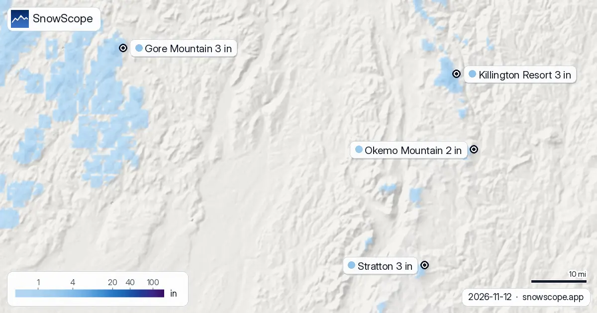
Is there more snow than a year ago? We compared today with 12 November last winter at 4 resorts in the US Northeast: 0 of them have more snow now, …

Between 1,380 m and 3,410 m: that is where our forecast puts the 0 °C level in Western Canada over the next days. In the warmest hours the snow line, …

Today's maps look two weeks ahead in the Pyrenees, 13 November to 26 November. They come from the two global models that reach two weeks, ECMWF and …

Where will it snow in the US Northeast between 13 November and 26 November, and how much? We asked the two global models that reach two weeks, ECMWF …

Fourteen days of new snow on one map, 13 November to 26 November, for every mountain in Western Canada: that is what the two global models that reach …

Height changes everything at Telluride: our model gives 0 in (0 cm) at the base (8,734 ft / 2,662 m), 2 in (6 cm) at mid-mountain (10,620 ft / …
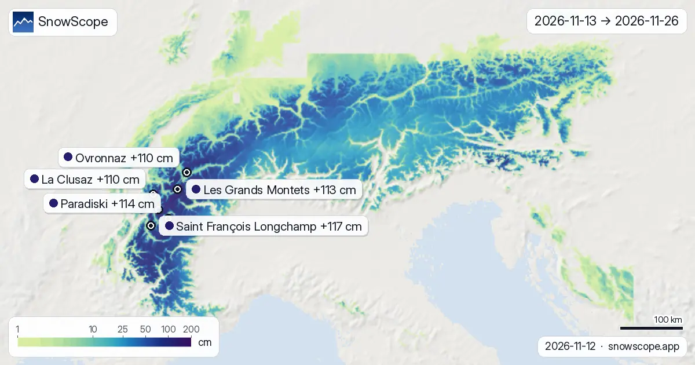
Here are the new maps of the next two weeks in the Alps, 13 November to 26 November: the new snow expected on the terrain, read from the two global …

Here are the new maps of the next two weeks in the Atlas (Morocco), 13 November to 26 November: the new snow expected on the terrain, read from the …

Our two-week maps show where new snow should fall in the US West between 13 November and 26 November, from the two global models that reach two …

Whistler Blackcomb, 116 cm of snow: today's depth on the upper slopes (12 November). 162 cm: that is the snow on the upper slopes of Mount Washington …

Kirkwood snow outlook: in line for 16 in by 15 November (US West). The next few days look decidedly unsettled in the US West, with the heaviest snow …
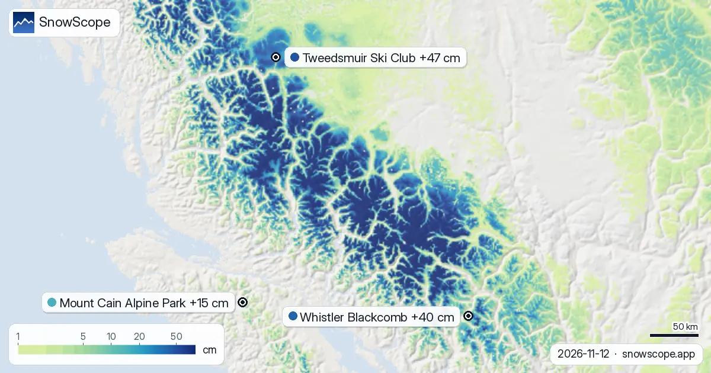
Mount Cain Alpine Park fresh snow compared with the region: 15 cm in 72 hours (12 November). The snow cover shrank from 281,250 km² on 10 November to …
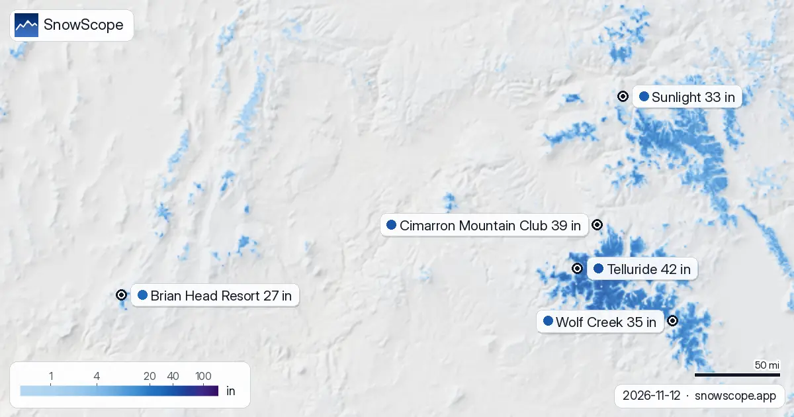
Cimarron Mountain Club, 39 in of snow: today's depth on the upper slopes (12 November). 42 in (106 cm): that is the snow on the upper slopes of …

Purgatory Resort (Durango, Colorado) ski report from our snow model: 3 in (7 cm) at the summit, bare base and mid-mountain, 4 to 7 in of new snow forecast in the next seven days, and what a usual Purgatory winter looks like.
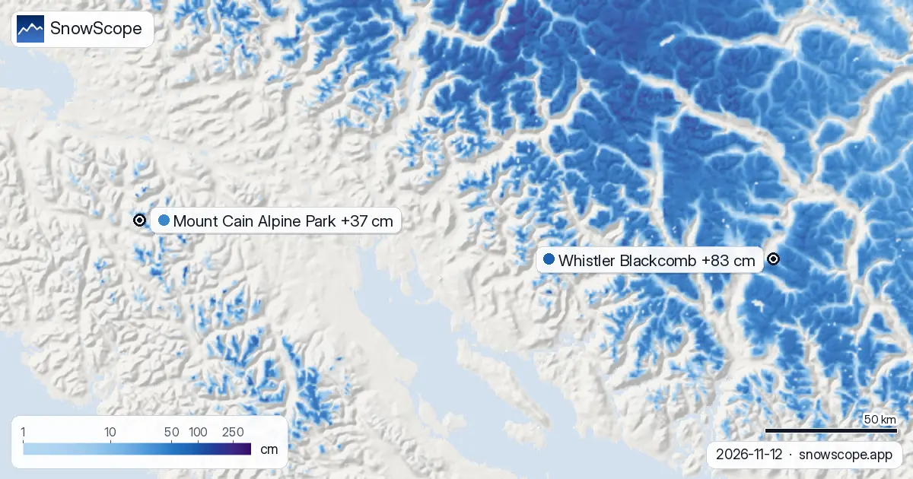
Mount Cain Alpine Park: how much snow is coming? 37 cm by 15 November. How much snow is coming in Western Canada, and where? Until 15 November, our …

Our model splits Piau-Engaly into three heights: 2 cm at the top (2,527 m), 0 cm at mid-mountain (2,144 m), 0 cm at the base (1,762 m). In the last …

Atlas snow report, 12 November. Atlas ski resorts today: no snow on the slopes. Snow only on the top summits: about 40 km² of white ground, 10 cm at …

Pyrenees snow report, 12 November. Looking ahead to 15 November, the forecast brings 33 cm at Cauterets Cirque du Lys, 29 cm at Piau-Engaly and 25 cm …

La Rosière snow conditions on our 11 November model run: 24 cm at the top (2799 m), bare mid-mountain and village, and a seven-day forecast of 108 cm at the top and 61 cm at mid-mountain. The sunny side of the Petit-Saint-Bernard in numbers.

Snow at Alpe Devero (Ossola, Piedmont) on our model: 2 cm at the top (2201 m), bare below, 36 cm of new snow forecast at the top in the next seven days. The small car-free resort and its usual winter in numbers.
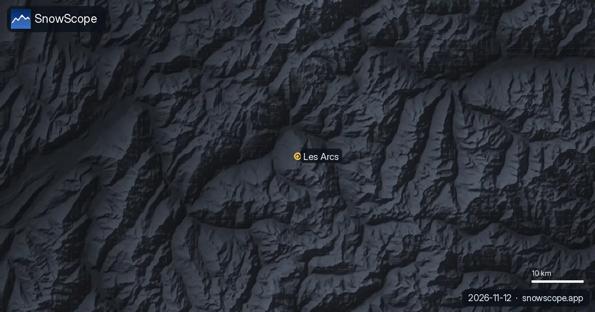
Les Arcs snow report from our model: 34 cm at the top (3205 m), 2 cm at mid-mountain, a bare base, and up to 69 cm of new snow forecast at the top in the next seven days. What Les Arcs usually has in November and December.

Méribel snow conditions from our model on 11 November: 24 cm at the top (2920 m), 1 cm at mid-mountain, a bare valley, and a forecast of 99 cm at the top and 58 cm at mid-mountain over the next seven days. The usual Méribel winter in numbers.

The Isola 2000 ski map with today's snow: 9 cm at the top, 7 cm at mid-mountain, 2 cm at the base after 31 cm in a week, how the Pelevos, Saint-Sauveur and Lombarde sectors are laid out, and what a usual winter brings.

No snow yet at Oukaïmeden: 0 cm at all three heights, nothing in the last seven days, nothing in the coming week. What a usual November brings to the High Atlas and when to aim for skiing.

At 1,308 m on Dent de Vaulion, today's 0 cm is more than this date brought in 34 of the past 46 winters (usual: 0 cm): a good amount of water is …

Snow-covered area: 45,820 km² on 9 November, 38,440 km² today, 46,730 km² forecast for 14 November. The map is getting less white. Glacier 3000: …

Les Deux Alpes snow forecast compared with the region: 51 cm by 14 November. The snow cover shrank from 45,820 km² on 9 November to 38,440 km² today, …

Alps snow report, 11 November. Three inputs, one shortlist: today's snow depth, the new snow of the last 72 hours and the forecast point to Dent de …

Less ground is white now: 40 km² on 9 November, only 20 km² today, and 10 km² expected on 14 November. Today the Atlas ski slopes are bare. Only the …

Is there more snow than a year ago? We compared today with 11 November last winter at 4 resorts in the Pyrenees: 0 of them have more snow now, …

From our snow model and forecast, today in the Pyrenees brings thin early-season snow and warm air that can leave a crust. Below, resort by resort: …

US Northeast snow report, 11 November. Until 14 November the forecast gives 15 in (38 cm) at Okemo Mountain, 12 in (30 cm) at Stratton and 11 in …

Over the next days the 0 °C level in the US West should move between 8,333 ft (2,540 m) and 13,780 ft (4,200 m), according to our forecast. At the …

US West snow report, 11 November. Until 14 November the forecast gives 17 in (43 cm) at Mt. Shasta Ski Park, 15 in (39 cm) at Kirkwood and 14 in …

Is there more snow than a year ago? We compared today with 11 November last winter at 4 resorts in the US West: 4 of them have more snow now, …

Is this a good start to the winter in the US West? 5 resorts in the US West, 46 past winters, one date: here is how today compares. Clearly above …

Where should you go skiing in the US West? Three inputs, one shortlist: today's snow depth, the new snow of the last 72 hours and the forecast point …

38 cm in 72 hours: that is the fresh snow at Tweedsmuir Ski Club. Tweedsmuir Ski Club gained 38 cm of new snow in the last 72 hours, 35 cm of it in …

Our snow model and forecast for today in Western Canada point to fresh powder, a snowstorm on the way, icy mornings and soft afternoons and warm air …

Picking a resort in Western Canada comes down to three things: how deep the snow is, how fresh it is, and what is still to come. We weighed the snow …

Our snow model forecasts up to 58 cm of new snow for La Grave, France, by Saturday, November 14, 2026. See where else snow is expected.

Above 1,500 m around Toubkal, the ground was white for 94 days in winter 2025-26, the most in 26 winters of satellite images. How low the snow came, when it left, and how this winter compares with 2008-09 and the dry years.

We compared the snow on 10 November with each winter's deepest snow at 46 ski resorts over 46 winters. A snowy start helps, but less than many skiers think.

A storm on November 4 left 8 to 13 inches of new snow at five high Colorado stations near Aspen. Five days later, half of it was gone. What that means for powder days.

The 0 °C level in the US Northeast, next days: 1,936 ft (590 m) to 6,037 ft (1,840 m). Warmest hours: snow line about 984 ft (300 m) lower, up to …

How long the Pyrenees stayed white each winter since 2000-01, seen by satellite, and snow depth at 10 long-running stations. Three thin winters in a row ended in 2025-26; this autumn has started normally.

Where is the deepest snow in the US West today? If you want the most snow in the US West today, look at Wolf Creek (United States): about 35 in …

A slope map of Les Grands Montets and seven other ski areas shows how much of the ground is steeper than 30°, 35° and 40°, and why that line matters for avalanches.

The snow has pulled back since 8 November, from 676 sq mi (1,750 km²) to 42 sq mi (110 km²) today; for 13 November our forecast gives 12,668 sq mi …

In 24 of 46 winters, resorts on the Italian and southern French side of the Alps had a relatively bigger winter than the northern side. The chart, the big years and the weather behind them.

Snow in December depends first on height. 46 past winters at 676 Alpine resorts show how much snow to expect on 1, 15 and 22 December, from below 1,200 m to above 2,400 m.

Whistler Blackcomb got 75 cm of new snow at the top in a week, then a warm storm with 124 mm of water. A simple guide to base, fresh snow, rain and crust.

Where is the deepest snow in Western Canada today? Deepest snow in Western Canada today: Manning Park Resort, about 110 cm on the upper slopes …

The 0 °C level in the Pyrenees, next days: 2,420 m to 3,710 m. The snow line, about 300 m lower, peaks at 3,400 m at Masella on Tuesday 10 November. …

A cheap 3-day Lake Como plan for December with real 2026-27 prices: trains, ferries, a funicular and a ski day at Piani di Bobbio or Madesimo, what you save compared with Cortina, and the chance of snow at Christmas.

8 cm: that is the most snow our model finds in the Atlas today. The ski resorts of the Atlas have no snow on their slopes today. Our snow model only …

Livigno's snow today, what the European seasonal forecast says about December, and why height beats a warm month at Christmas.

Snow today in Cortina, the European seasonal forecast for December and our chances of a white Christmas, mountain by mountain in the eastern Dolomites.

Where December 2026 looks snowier or leaner across the Dolomites, from Val Gardena to Cortina: the European seasonal forecast, our map and the chances of a white Christmas.

Up to 37 cm: that is what our forecast gives Piau-Engaly by 13 November. Until 13 November, our forecast gives 37 cm at Piau-Engaly, 21 cm at …

How much water the Atlas snow may hold in February 2027: the European seasonal forecast is about 3 °C warmer and wetter in the west and south, so snow odds stay low across Morocco's river basins.

The European seasonal forecast makes January 2027 about 2 °C warmer over the Atlas. Our outlook for snow depth, snow water and the water stored for Morocco's rivers.

Bou Iblane is still bare. The European seasonal forecast points to a clearly warmer December, and on every snowy part of the Middle Atlas our odds lean leaner.

Each day we list the resorts set to get the most new snow, for the next 24 hours and until 13 November, across Europe, Morocco and North America, …

Where December 2026 looks snowier or leaner from Montana to New Mexico: the European seasonal forecast and our map, mountain by mountain, with Colorado, Utah and the Northern Rockies.

Will the snowpack from the Écrins to the Maritime Alps and Piedmont fill as usual in December 2026? The European seasonal forecast and our map, mountain by mountain.

No snow yet at Oukaimeden. The European seasonal forecast sees a warmer December over the High Atlas, and our map shows leaner odds on almost every summit.

Snow today at the Grands Montets, the European seasonal forecast for December and our map of where December looks snowier or leaner around Mont Blanc.

Vail in numbers: a usual peak of about 64 in (162 cm) at mid-mountain over 46 past winters, March the deepest month, plus terrain, access and safety.

Zermatt in numbers: where the snow lasts, the safest months and how to reach the car-free village, from 46 past winters of snow data.

Steamboat, Colorado, for families: what works for toddlers, school-age kids, teens and parents, with the snow of 46 past winters at three heights.

Is Verbier good for beginners? When is the snow best? How do you get there? Answers from the 4 Vallées and 46 past winters of snow data.

How to spend a first day at Park City Mountain, Utah, and when to go: our snow history gives about 71 in (180 cm) at the usual mid-mountain peak over 46 past winters.

One picture, 100 mountain ranges in the Alps, the Pyrenees, the Atlas and North America: Canada leads with 89% snow cover, the Alps reach 45%, the Atlas and the US Northeast are still bare.

A walk-through of the Sella Ronda from Sëlva in Val Gardena: Gardena, Campolongo, Pordoi and Sella passes in order, with our snow history of 46 past winters.

Mt Baker, Washington: about 133 in (337 cm) at the usual peak at mid-mountain in 46 past winters, a world snowfall record, no lodging on the hill, and what that means.

Val d'Isère and the Espace Killy for beginners, improvers and experts, with the snow of 46 past winters at three heights.

Plan Mammoth Mountain by season: about 93 in (235 cm) at the usual peak at mid-mountain over 46 past winters, March deepest, long springs, and winters that swing.

Kitzbühel is famous and low. What 46 past winters say about snow at 762 m, 1,377 m and 1,993 m, how it has changed, and which weeks are the safer bet.

Jackson Hole myths checked against facts and our snow history: about 80 in (204 cm) at the usual peak at mid-mountain over 46 past winters, and no clear decline there.
We compared the SnowScope snow depth map with 2,012 measuring stations: RMSE 7.7 cm, bias -0.5 cm, snow or no snow right 88 % of the time. What works, what doesn't yet, and what we improve next.

Ten practical points for a ski trip to Livigno: the roads in, the cold, the duty-free shops, the two ski sides and when the snow is best, from 46 past winters of our snow history.
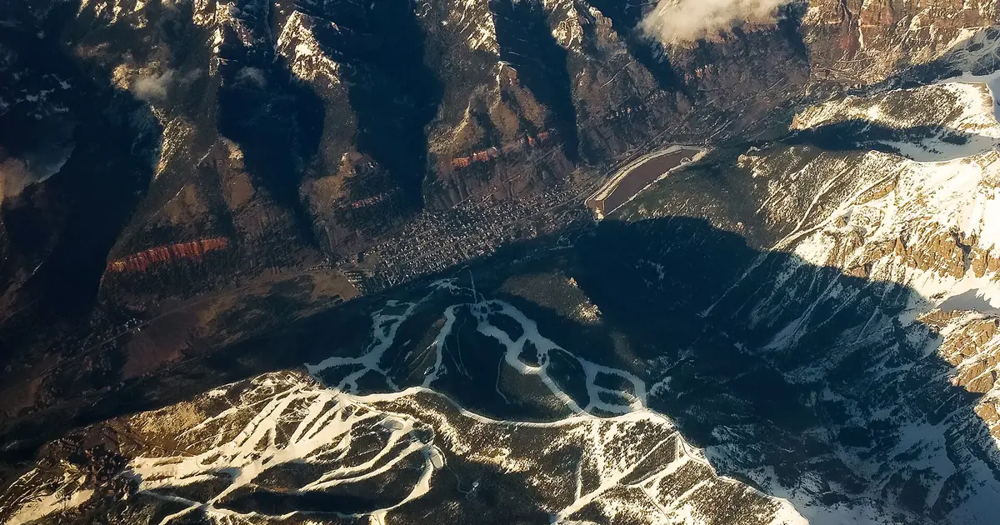
Getting to Telluride in winter, airport by airport: Telluride Regional, Montrose, the drive on Highway 145 with the Colorado traction law, and the free gondola to Mountain Village.

How a snow day at Whitewater near Nelson usually unfolds, from the early forecast check to the last run, with the snow of 46 past winters at three heights.

Arc 1600, 1800, 1950 and 2000 compared for snow, slopes and access, with 46 past winters of our snow history at three heights of Les Arcs.

Getting to Snowbird in winter: one canyon road (SR-210), Utah's traction law, the UTA ski bus and the drive from Salt Lake City airport.

Whistler Blackcomb for every level, with our snow history: about 370 cm at the usual peak at mid-mountain over 46 past winters, March and April the deepest months.

From Walser farmers to the White Ring: the dates that made Lech Zürs, followed by our snow record then and now, the first fifteen of 46 past winters against the last fifteen.

Driving to Palisades Tahoe in winter: distances from Reno, California chain controls R-1 to R-3, weekend parking reservations, free TART buses.

A practical kit list for Stowe, Vermont: layers, face cover, goggles, sharp edges and hand warmers, tied to the snow of 46 past winters on Mount Mansfield.

Skiing Lake Louise early in the season: why it starts early, what November and December snow usually looks like in 46 past winters, and how to ski thin early cover.

What is true about La Grave, the off-piste mountain under La Meije: terrain, safety, snow by month and the trend, from 46 past winters.

Big Sky, Montana, made easy to picture: 5,850 acres under Lone Peak, and snow that is about five times deeper near the top than at the base in 46 past winters.

Andorra has no big airport: how to reach Grandvalira from Barcelona or Toulouse, the Envalira tunnel, the CG2 road and the free and paid car parks.

Magic Mountain in Londonderry, Vermont: an independent hill with steep glades, an old red chairlift and thin natural snow. Five things to know, with the snow of 46 past winters.

Ski Revelstoke's whole vertical in your head first: the snow at the summit, mid-mountain and the valley base in 46 past winters, and when each part is at its best.

Seven days in the Silvretta Arena, one at a time: where the snow is, when to cross to Samnaun, and what 46 past winters say about Ischgl's snow at three heights.
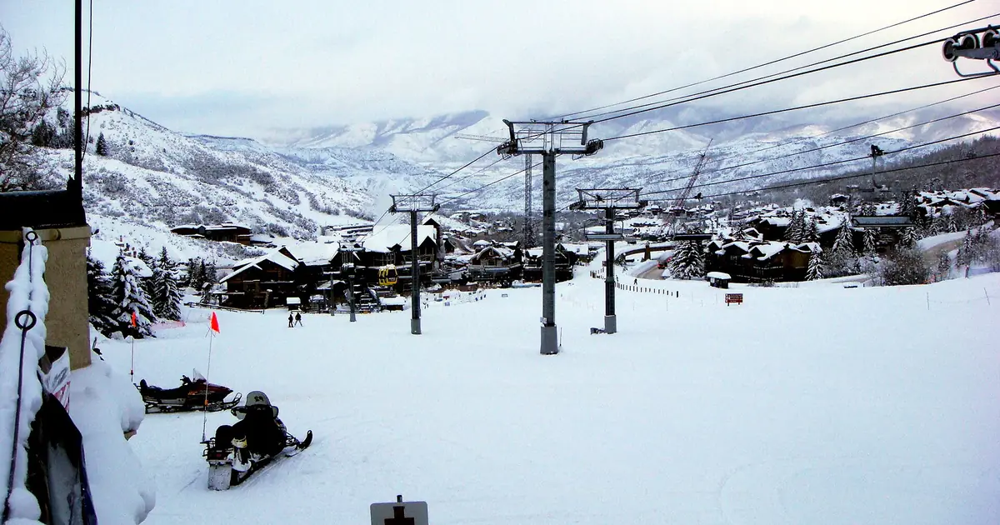
Aspen Snowmass compared: Snowmass has about 75 in (190 cm) at the usual peak at mid-mountain over 46 past winters, Aspen Mountain about 69 in (174 cm). Terrain, access, safety.

Gourette and Cauterets side by side: heights, usual snow by month, the best weeks and how to get there, from 46 past winters.

Mad River Glen, Vermont: natural snow, about 30 in (75 cm) at the usual peak at mid-mountain over 46 past winters, February deepest. Three ways to plan a day there.
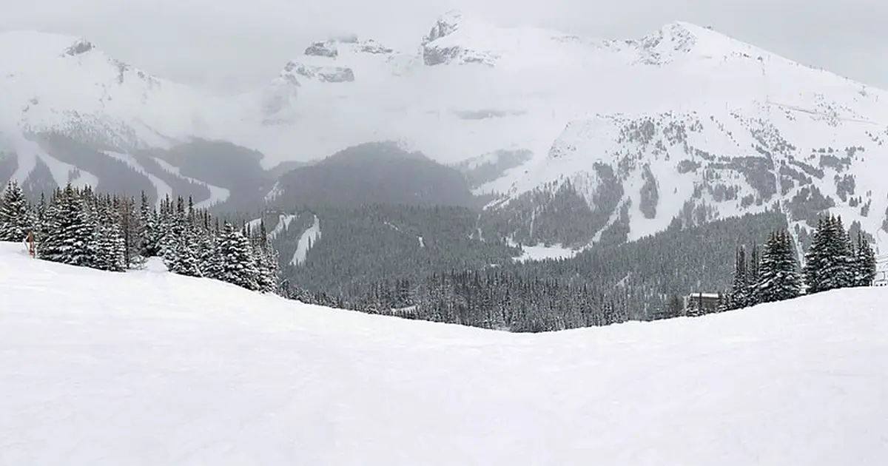
Banff Sunshine Village month by month: about 100 cm at mid-mountain in a usual March over 46 past winters, April deepest near the top, and a season into late May.

Saas-Fee is car-free: train to Visp and PostBus 511, the drive through the Rhône valley and the car trains, the car parks and the free buses.

About 109 in (276 cm) is Alta's usual peak at mid-mountain over 46 past winters. Here: why snowboards stay home, the best months and how to get up the canyon.

Model plus forecast in the Pyrenees today gives thin early-season snow and warm air that can leave a crust. What to wear, what to pack and when to …

Alpe d'Huez faces the sun. How to plan a day by the clock and by height, with the snow of 46 past winters from the low villages to Pic Blanc.

Our 46-winter Alps record at 108 points from 667 to 3,872 m: snow days down at all of them, clearly at 81 %. What changed at each height, and why.

At the height of Oukaïmeden our 46-winter record shows 12 % fewer snow days; lower down the signal is lost in huge year-to-year swings. What we know.

Baqueira-Beret sits in the Val d'Aran, on the Atlantic side of the Pyrenees. What that means for its snow, tested with 46 past winters against La Molina, and when to go.

A portrait of Bonneval-sur-Arc in Haute-Maurienne: stone roofs, a closed pass, a small ski area and surprisingly deep snow, from 46 past winters of our snow history.

How to spend a first day skiing in Chamonix, from the Grands Montets above Argentière to the right hour for each slope, with 46 winters of snow data.

Cortina d'Ampezzo three ways: Tofana, Faloria-Cristallo and Cinque Torri-Lagazuoi, with 46 winters of snow data at three heights.
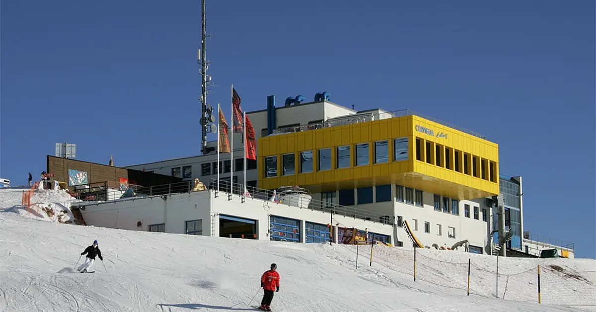
Chantarella, Marguns, Piz Nair, White Turf: the words you hear in St. Moritz, explained, and what 46 past winters of our snow history say about each height of Corviglia.


Our daily table follows the coming snow: the resorts with the most forecast for the next 24 hours and until 12 November, in Europe, Morocco and North …

Davos and Klosters share six ski mountains. A day-by-day plan, starting on Parsenn, with what 46 past winters of our snow history say about its heights.

When to book Courchevel and the 3 Vallées, which village to stay in and where the snow lasts, planned from 46 past winters of snow data.
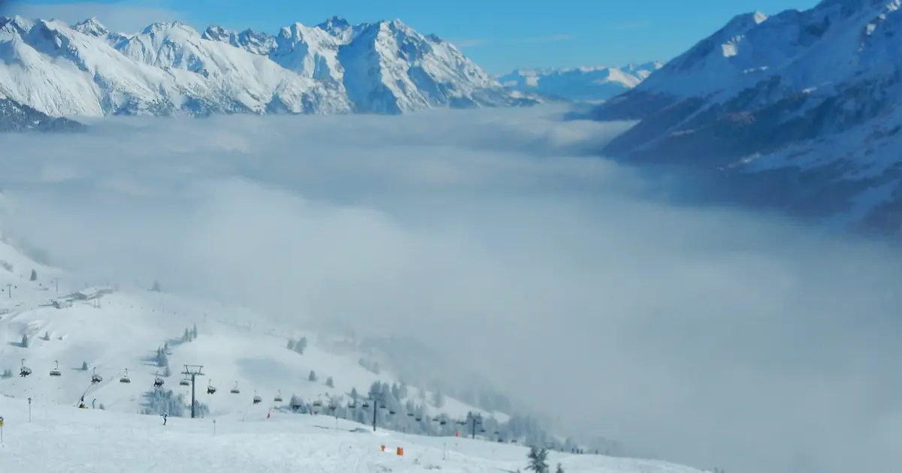
St Anton and Ski Arlberg through the winter: how deep the snow usually is each month at three heights, from 46 past winters.

The early-winter snowpack in Western Canada is building unevenly, and height makes all the difference. If you want the most snow in Western Canada …